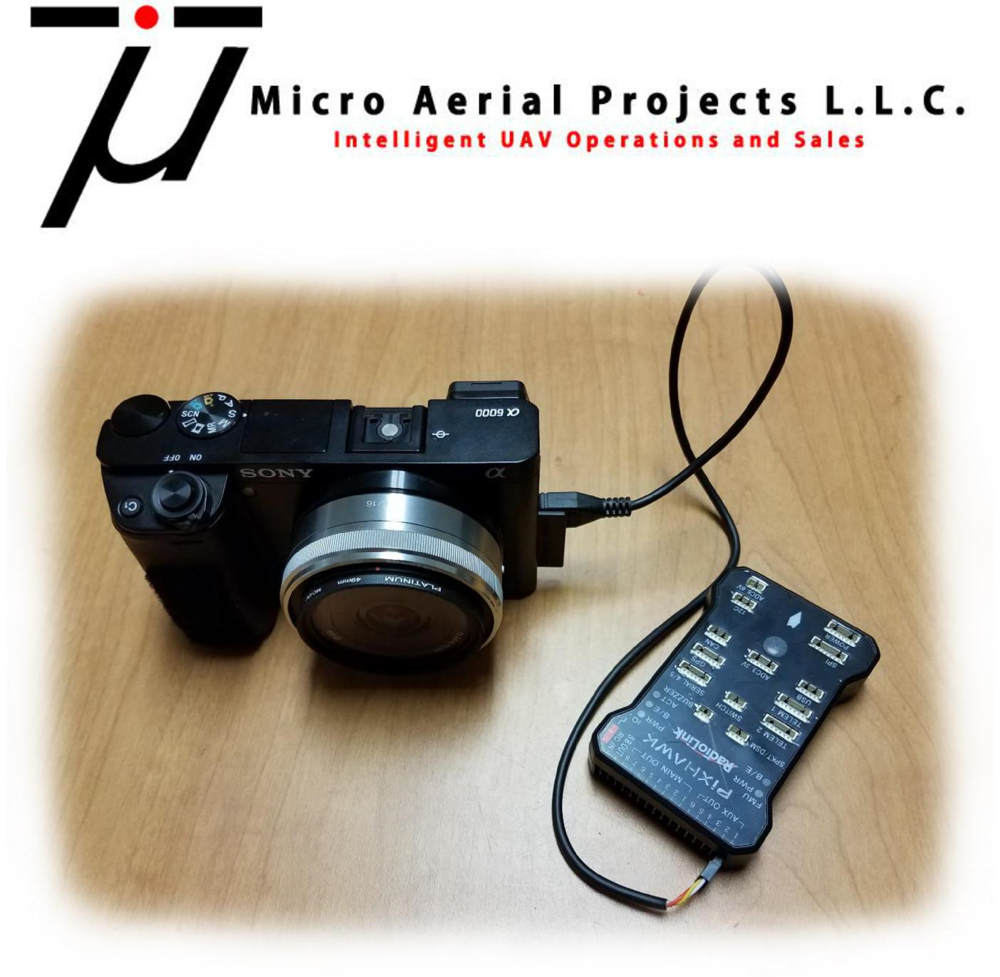
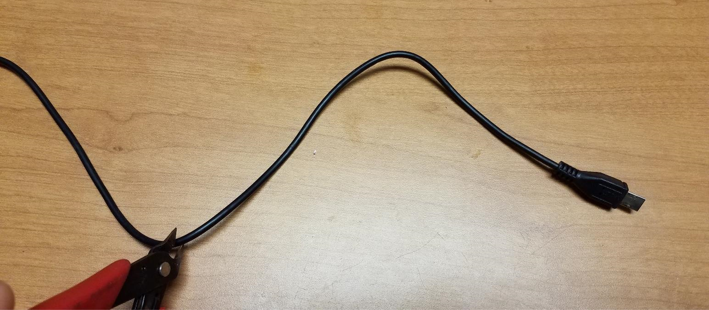
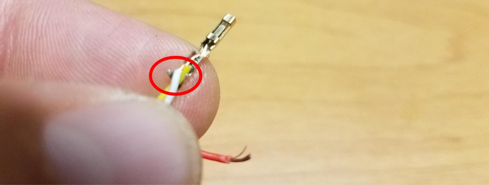
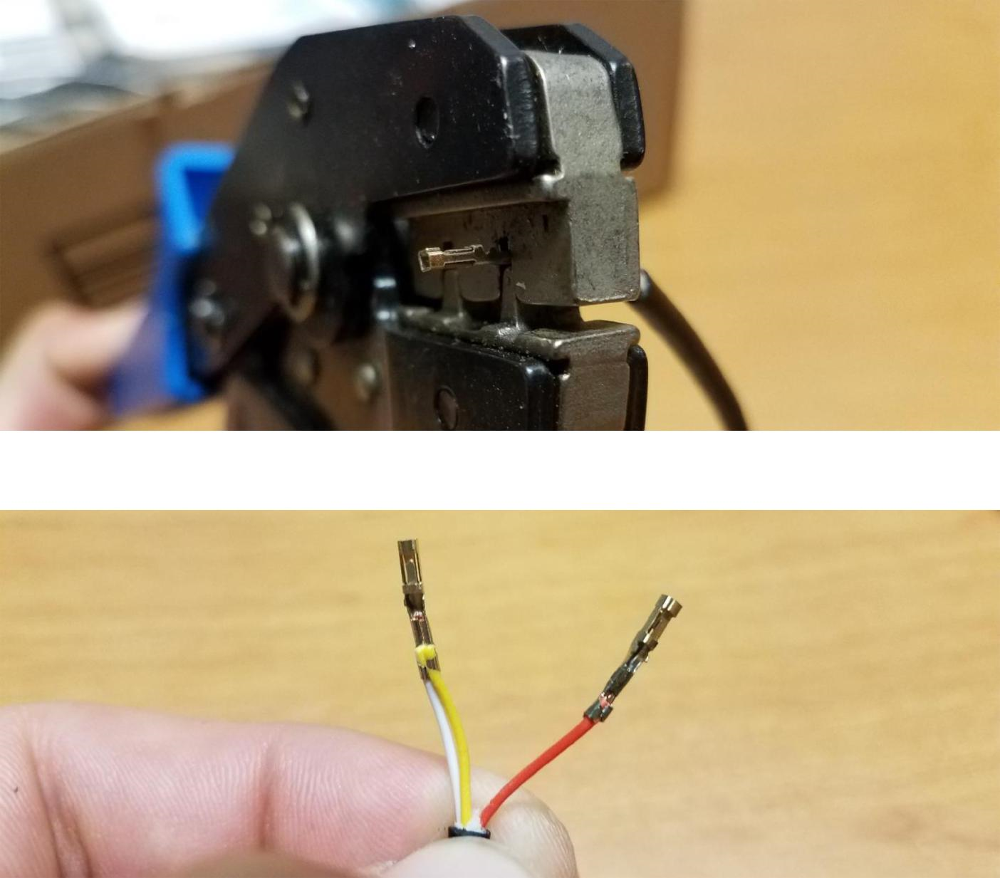
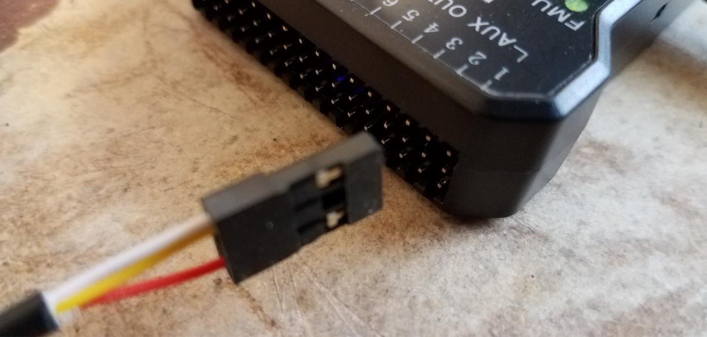

Camera Trigger Setup for Pixhawk¶
{kind=link}
This guide is intended to help you modify a remote shutter release cable for use with ArduPilot autopilots and setup the flight controller for triggering the camera. This method eliminates the need (and costs) for 3rd party triggering devices. In this specific example, we will use a Sony Alpha 6000 (A6000) camera. This procedure may work with other cameras however for this specific example, we will use a Sony Alpha A6000 (A6000).
Items Required¶
Sony A6000 (or other camera with wire shutter release)
ArduPilot compatible autopilot with a free GPIO pin to be used as a relay pin. See GPIOs for more information
Remote Shutter Release Cable (see here for an affordable solution)
Servo Pins (link)
Servo Pin Crimper (link)
Wire Stripper or Razor Blade
Laptop with Mission Planner Installed
Step 1: Preparing the Remote Shutter Release Cable

Trim the Remote Shutter Release Cable to the desired cable length
{kind=link}
Strip off approximately 2-3cm of the black sleeve making sure not to damage the 3 wires contained within the sleeve.
{kind=link}
Remove approximately 3mm of the sleeves off of each of the three wires. You will need to make sure that there is enough of the sleeve removed that when the servo pin is crimped to the wire that there is contact between the pin and the exposed wire.
{kind=link}
The three wires have the following functions:
RED: SHUTTER
YELLOW: GROUND
WHITE: FOCUS
NOTE: Your wire coloring may differ from this example. You can identify which functions are controlled by each cable by connecting the cable to your camera, powering it on and then shorting the cables in pairs to identify which pair does what. For example, if you have a GREEN, BLUE and BLACK set of wires and shorting BLUE and BLACK results in the camera focusing, and then you short the GREEN AND BLUE wires and nothing happens but shorting the GREEN AND BLACK results in the camera exposing, then you know that the BLACK wire is ground, GREEN is shutter and BLUE is focus.
Twist the exposed ends of the FOCUS and GROUND wires together then crimp a servo connector to the pair as well as to the exposed end of the SHUTTER wire
{kind=link}
{kind=link}
TIP: The Servo Pin has two sets of tabs which after crimping will fold on each other and secure the wire. To make life a little easier, use a small pair of needle nose pliers to press the pair of tabs on the end of the servo pin tightly against the wires. This will prevent the wires from coming out of the servo pin while trying to crimp them.
 {kind=link}
{kind=link}
Insert the Servo Pins into a Servo connector, one pin on each side of the middle slot of the servo connector.
{kind=link}
The cable is now ready for connection to your Pixhawk Controller. Note that the Shutter Pin (in this case the RED wire) will be on the SIGNAL side of the Auxiliary port while the WHITE/YELLOW wire will be on the GROUND side of the Auxiliary port.
{kind=link}
Step 2: Setting up your autopilot to trigger your camera via the Shutter Release Cable
Connect to your Autopilot via Mission Planner either through direct USB connection or wireless telemetry link.
Connect your modified shutter release cable to a free GPIO capable pin on the autopilot making sure to maintain the correct orientation for polarity. For example, by default on the Pixhawk, AUX5 or AUX6 is configured to be a GPIO and can be used as a Relay output.
Connect the shutter release cable to your camera and power the camera on
{kind=link}
Since we have shorted the FOCUS and GROUND wires, the camera should automatically pull focus. As of now, I have not found a way to connect the SHUTTER, FOCUS and GROUND wires individually to the autopilot and have the autopilot pull the camera focus and trigger the camera in sequence. To get around this, the camera settings are set so that the camera has the following features activated:
Pre-Shutter Focus
Continuous Auto-Focus
In Mission Planner, navigate to INITIAL SETUP -> CAMERA GIMBAL and change the SHUTTER drop-down menu to “RELAY”
{kind=link}
NOTE: You can play around with the “Duration” values to increase or decrease the responsiveness of the shutter command. With the Sony A6000, a duration of 1/10th of a Second functions perfectly.
Proceed to the CONFIG/TUNING -> EXTENDED TUNING screen in Mission Planner and change the CH7 OPT to “Camera Trigger”. This will be necessary if you intend to use your remote controls CH7 to trigger the camera in addition to having the autopilot trigger the camera.
{kind=link}
Note
As of 4.0 firmware versions, any GPIO can be assigned as the Camera Trigger pin via its SERVOx_FUNCTION parameter, and any RC channel can be assigned to control that trigger via its RCx_OPTION parameter.
Navigate to the FULL PARAMETER LIST under the main CONFIG/TUNING tab and locate the
CAMx_TRIGG_TYPEparameter. This parameter must show as 1 for “RELAY”. If it is not set to 1, change this parameter to 1 before proceeding to the next step.
{kind=link}
Scroll down through the parameters until you get to RELAY_PIN (for the first relay pin…there can be up to 6) . Here you will want to set the RELAY_PIN parameter to match the GPIO pin you have connected the shutter release cable to. Since we have connected the cable to AUX6 on a Pixhawk, we need to change the RELAY_PIN parameter to “55” (55:Pixhawk AUXOUT6).
{kind=link}
Now that the required parameters have been changed, click on “WRITE PARAMS”
{kind=link}
Step 3: Testing the Remote Shutter Cable and Autopilot
Now that the cable has been modified and connected to the autopilot which has been setup to trigger the camera via relay, let’s test it.
Navigate back to the FLIGHT DATA Screen and right click on the map to select “TRIGGER CAMERA NOW”
{kind=link}
Once clicked, you should hear or see the camera expose. If the camera does not expose, check the following:
Correct Orientation of cables (ie, Shutter Wire is connected to the SIGNAL pin on the correct port of the autopilot and Ground is connected to Ground)
Camera is On and not in an Error State
Camera lens is not too close to an object which may cause it to be unable to autofocus and expose
If you still are not getting the camera to expose and all of the above-mentioned check points are not a problem, then you may want to adjust the Shutter Duration mentioned in Step 2 Part D.
If your camera took a picture, congratulations! You are all set to take pictures using the autopilot without needing third party hardware!
Many thanks to Oliver Volkmann and *www.microaerialprojects.com* for contributing this page.